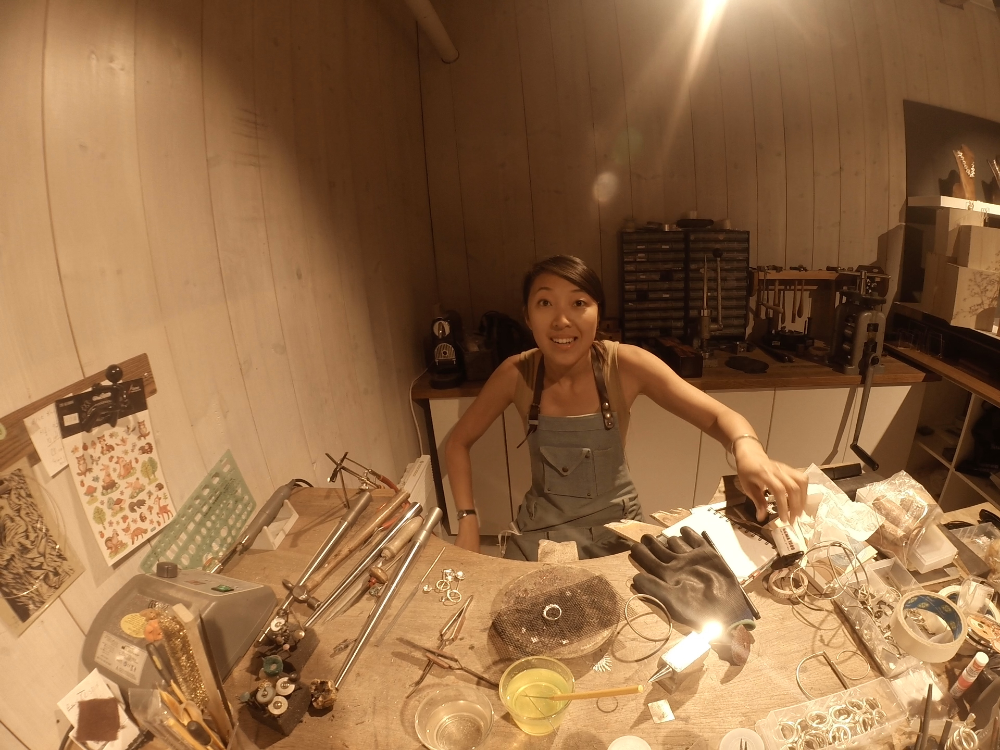

THE PASION OF THE JEWELLER
By Litus FixeHello, I'm Sui, jeweler and founder of The Sui Studio in Girona. I was born in Hong Kong, where art found me as a child, and later I studied Fine Arts before embarking on a journey that took me to Bergen, Norway. There, I worked alongside a master jeweler, descendant of a great sculptural tradition, and discovered that silver could be my canvas.
Each of my pieces is born from an intimate, artisanal process. I work only with silver—a metal I shape with patience and respect, without haste or mass production. I began selling at markets, my hands marked by effort and craft, until my workshop became the soul of The Sui Studio. Pure lines, textures, and volumes that speak for themselves.
My creations reflect my life: woven from journeys, lessons, and silences transformed into forms. I don’t seek the spectacular, but the authentic; pieces that endure over time and adapt to those who wear them. What defines me is my devotion to craftsmanship, made with hands and heart.
Today, my little space in the heart of Girona is both my refuge and my window to the world. Here, among tools, sketches, and the ever-surprising silver, I continue to create. If you’re nearby, I invite you in—even if just to share tea and tell me your story. Because in the end, every jewel is a dialogue: between my roots, my hands, and yours.